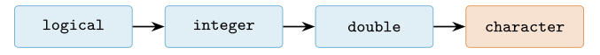
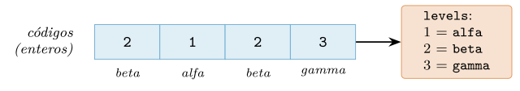
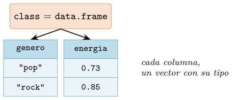
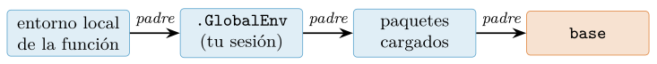
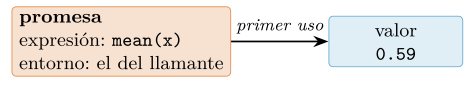

Capítulo 2. El modelo de datos de R: vectores, copia y NA
▶ Ejecutar este capítulo en Binder
La primera vez que se abre, Binder construye el entorno en la nube (unos 10-20 min); verás una pantalla de progreso. Después queda en caché y abre en segundos. Si parece que no responde, espera a que termine de construirse o vuelve a intentarlo.
Cada lenguaje descansa sobre un modelo mental que explica por qué hace lo que hace, y entenderlo temprano ahorra años de sorpresas. El de R se resume en cuatro ideas: todo es un vector, la copia es por valor pero perezosa, el valor ausente tiene tipo, y los argumentos de una función no se evalúan hasta que se usan. Ninguna de estas cuatro ideas es un detalle académico: la primera explica por qué una operación se aplica a un millón de números sin un bucle (cap. 7), la segunda por qué modificar una tabla no estropea otra (cap. 8), la tercera por qué R es tan cuidadoso con los datos que faltan (cap. 10), y la cuarta sostiene la manipulación con dplyr y la gramática de gráficos (cap. 6). Este capítulo construye ese modelo, y cada cifra que aparece se ha medido ejecutando el código en R.
El recorrido va de lo simple a lo compuesto. Primero el vector y sus operaciones (vectorización, reciclaje, secuencias, las cuatro formas de indexar); luego los tipos y sus fronteras (coerción, números y su precisión, el NA tipado, la lógica trivalente, el texto); después los mecanismos de composición (atributos, factores, listas y el data frame); y por último las tres ideas que gobiernan la ejecución (copia al modificar, entornos, promesas), antes de un ejemplo integrador que teje todas las piezas.
Todo es un vector
En R no existen los números sueltos. Lo que en otros lenguajes es un escalar —un 42— en R es un vector de longitud uno. No es una sutileza: es la clave de que las operaciones se apliquen a colecciones enteras sin escribir un bucle.
x <- 42
length(x) # 1 <- "42" es un vector de un elemento
is.vector(x) # TRUECuando R imprime un vector, antepone entre corchetes el índice del primer elemento de cada línea. Ese [1] que aparece en toda salida no es decorativo: es el recordatorio permanente de que estás mirando un vector, y su primer elemento ocupa la posición 1 (R indexa desde uno, no desde cero).
c(10, 20, 30, 40, 50, 60, 70, 80, 90, 100, 110)
# [1] 10 20 30 40 50 60 70 80 90 100 110La función c() —de combine— es la que construye vectores pegando elementos. La figura 2.1 muestra la anatomía: una secuencia de celdas del mismo tipo, con una longitud y un índice que empieza en uno.

Los seis tipos atómicos
Un vector atómico contiene elementos de un único tipo, y R tiene seis, resumidos en la tabla 2.1. Los cuatro primeros —lógico, entero, doble y carácter— cubren casi todo el trabajo de datos; los complejos aparecen en cálculo numérico y los crudos (raw) en el manejo de bytes. La función typeof() revela el tipo interno de cualquier vector.
typeof() |
Contenido | Literal de ejemplo |
|---|---|---|
logical |
verdadero/falso/ausente | TRUE, FALSE, NA |
integer |
enteros | 42L, -7L |
double |
coma flotante | 3.14, 42, 1e-9 |
character |
cadenas de texto | "pop", "café" |
complex |
números complejos | 1+2i |
raw |
bytes | as.raw(255) |
typeof(1L) # "integer" <- la L fuerza entero
typeof(1) # "double" <- sin L, coma flotante por defecto
typeof("pop") # "character"
typeof(TRUE) # "logical"
typeof(1+0i) # "complex"Conviene fijar desde ya una distinción que confunde a quien viene de otros lenguajes: un número literal como 42 es un doble, no un entero. Para obtener un entero hay que escribir 42L. En la práctica del análisis de datos la diferencia rara vez importa —R promociona entre ambos sin avisar—, pero conviene saberlo para no sorprenderse cuando typeof(42) responde "double". (¿Por qué precisamente una L? Herencia histórica: alude al tipo long de C, el entero con el que se implementó; no significa nada más y no hay una D simétrica para los dobles.)
Vectorización y reciclaje
Que todo sea un vector tiene una consecuencia inmediata y poderosa: las operaciones se aplican elemento a elemento sobre el vector entero, sin bucle. Sumar dos vectores suma sus elementos emparejados; multiplicar un vector por un número multiplica cada elemento.
c(1, 2, 3, 4) * 10 # 10 20 30 40 <- sin bucle
c(1, 2, 3, 4) + c(10, 20, 30, 40) # 11 22 33 44¿Y si los vectores tienen longitudes distintas? R aplica la regla del reciclaje: repite el más corto tantas veces como haga falta para igualar al más largo. Es cómodo cuando el corto tiene longitud uno (multiplicar por un escalar es un caso de reciclaje), pero es una fuente de errores sutiles cuando las longitudes no encajan:
c(1, 2, 3, 4) + c(10, 20) # 11 22 13 24 <- (10,20) reciclado a (10,20,10,20)Aquí no hay error ni aviso: R recicla (10, 20) en silencio y devuelve un resultado que casi nunca es el que se quería. La figura 2.2 muestra la mecánica: el vector corto se repite, celda a celda, hasta cubrir al largo. La única red de seguridad que ofrece R base es parcial: si la longitud larga no es múltiplo de la corta, al menos emite un aviso («longer object length is not a multiple of shorter object length»); si es múltiplo exacto, como arriba, el silencio es total. Por eso las funciones del tidyverse (cap. 8) endurecen la regla y solo aceptan reciclar vectores de longitud uno: la experiencia enseñó que cualquier otro reciclaje implícito es más trampa que comodidad.
1:6 + c(10, 100) # 11 102 13 104 15 106 <- multiplo: NI UN AVISO
1:6 + c(10, 100, 1000, 5) # aviso: "longer object length is not a multiple..."
1:6 + c(10, 100), el vector corto (naranja) se repite —las celdas a trazos son las recicladas— hasta cubrir al largo, y la operación procede elemento a elemento. Si la longitud larga es múltiplo exacto de la corta, R no avisa.La vectorización es la gran virtud de R, y el reciclaje silencioso, su trampa gemela; el capítulo 7 vuelve sobre ambos con el detalle que merecen.
Fabricar vectores regulares: rep y seq
El reciclaje repite vectores por necesidad; rep() lo hace bajo control, y distinguir sus dos modos evita otro tropiezo clásico. times repite el vector entero en bloque; each repite cada elemento antes de pasar al siguiente; y length.out corta el resultado a una longitud exacta:
rep(c(10, 100), times = 3) # 10 100 10 100 10 100 <- el vector, tres veces
rep(c(10, 100), each = 3) # 10 10 10 100 100 100 <- cada elemento, x3
rep(c(10, 100), length.out = 5) # 10 100 10 100 10 <- recorta a 5Su pareja es seq(), que genera progresiones: con by se fija el paso y con length.out, el número de puntos. Dos parientes abreviados merecen preferencia en el código serio: seq_len(n) para «los enteros de 1 a \(n\)» y seq_along(x) para «los índices de x», porque manejan con gracia el caso vacío en el que el idiomático-aparente 1:n fracasa:
seq(0, 1, by = 0.25) # 0.00 0.25 0.50 0.75 1.00
seq(0, 1, length.out = 4) # 0.0000000 0.3333333 0.6666667 1.0000000
seq_len(0) # integer(0) <- vacio, correcto
1:0 # 1 0 <- SORPRESA: cuenta hacia atrasEse 1:0 final es una trampa real: un bucle for (i in 1:n) con n = 0 no se salta el cuerpo, sino que lo ejecuta dos veces —con i valiendo 1 y 0—, porque el operador : cuenta hacia atrás cuando el extremo derecho es menor. seq_len(n) devuelve el vector vacío y el bucle, correctamente, no itera. Es el tipo de detalle que separa un guion que funciona «casi siempre» de uno que funciona.
El vector vacío y sus neutros
El vector de longitud cero —numeric(0), character(0)— no es un error ni una rareza: es el resultado legítimo de un filtro que no atrapó nada, y el código robusto lo trata con naturalidad. Las agregaciones sobre él devuelven el elemento neutro de su operación, que es exactamente lo que las matemáticas mandan… con dos excepciones que conviene conocer:
sum(numeric(0)) # 0 <- neutro de la suma: sensato
prod(numeric(0)) # 1 <- neutro del producto: sensato
mean(numeric(0)) # NaN <- 0/0: no hay promedio de nada
max(numeric(0)) # -Inf (con aviso) <- el neutro del maximo sorprende
numeric(0) + 1 # numeric(0) <- la aritmetica conserva el vacioEse -Inf del máximo vacío ha coloreado más de un informe: un grupo sin observaciones cuyo «máximo» se cuela en una tabla. La vacuna es preguntar length(x) > 0 antes de agregar cuando el vacío es posible. Y una curiosidad coherente con todo lo anterior: c() sin argumentos devuelve NULL —la ausencia de vector—, no un vector vacío de algún tipo, porque sin elementos no hay de qué deducir el tipo.
Indexar un vector: las cuatro formas
Si el vector es la estructura universal, extraer partes de él es la operación universal, y R le dedica una sintaxis —los corchetes [ ]— con cuatro modos que conviene dominar por separado, porque todo el análisis de datos posterior (el filter y el select de dplyr incluidos) es azúcar sobre ellos.
Por posición, por exclusión, por máscara, por nombre
x <- c(10, 20, 30, 40, 50)
x[c(1, 3)] # 10 30 <- 1) POSITIVA: las posiciones pedidas
x[c(-1, -5)] # 20 30 40 <- 2) NEGATIVA: todas MENOS esas
x[x > 25] # 30 40 50 <- 3) LOGICA: donde la mascara es TRUE
names(x) <- c("a", "b", "c", "d", "e")
x[c("b", "d")] # 20 40 <- 4) POR NOMBRE: como un diccionarioCada forma tiene su matiz. La positiva respeta el orden y las repeticiones que pidas —x[c(3, 3, 1)] devuelve tres elementos—, lo que la hace útil para reordenar (§2.7.1). La negativa no se mezcla con la positiva: o pides o excluyes. La lógica es la reina del análisis de datos: la máscara sale de una condición vectorizada y selecciona «las filas que cumplen»; su único peligro es heredado del reciclaje —una máscara más corta que el vector se recicla en silencio—. Y la por nombre convierte el vector con names en un pequeño diccionario.
La figura 2.3 sigue el camino completo de la forma lógica: la condición produce la máscara, la máscara filtra el vector. Este encadenamiento —condición \(\to\) máscara \(\to\) subconjunto— es posiblemente la operación más repetida de todo el libro.

x > 25 produce una máscara lógica (naranja; T/F abrevian TRUE/FALSE), y x[máscara] conserva los elementos donde hay TRUE (verde). Condición \(\to\) máscara \(\to\) subconjunto: el gesto más repetido del análisis de datos.Asignar sobre un índice y los bordes del vector
Los corchetes no solo leen: asignan. La combinación «máscara + asignación» es el idioma estándar para corregir valores en masa —ya lo usó limpiar_energia y lo reencontraremos en toda limpieza de datos—:
y <- c(3, NA, 5)
y[is.na(y)] <- 0 # los huecos, a cero (decision que se declara, cap. 10)
y # 3 0 5Y conviene conocer el comportamiento en los bordes, porque es silencioso: pedir más allá del final no es un error sino NA, y asignar más allá del final agranda el vector rellenando el hueco con ausentes:
x <- c(10, 20, 30)
x[7] # NA <- fuera de rango: NA, no error
x[5] <- 50
x # 10 20 30 NA 50 <- crecio hasta 5, rellenando con NANinguna de las dos cosas avisa; ambas han producido errores célebres. Para mirar los extremos con seguridad están head(x, n) y tail(x, n), que nunca se salen del rango. El resto de la maquinaria de indexación —matrices con [fila, columna], listas con [[ ]], tablas enteras— se apoya en estas cuatro formas y llega con las estructuras del capítulo 4.
Tipos y coerción
typeof, class y mode
R ofrece tres funciones para preguntar «qué es esto», y distinguirlas evita confusión. typeof() devuelve el tipo interno (los de la tabla 2.1); class() devuelve la clase de alto nivel, la que usa el sistema de objetos (cap. 6) para decidir cómo se comporta; y mode(), más antigua y tosca, se usa poco. La diferencia se ve con una matriz, que por dentro es un vector de enteros pero se presenta como matriz:
m <- 1:6
dim(m) <- c(2, 3) # le damos una dimension
typeof(m) # "integer" <- por dentro, vector de enteros
class(m) # "matrix" "array" <- pero se comporta como una matrizLa jerarquía de coerción
Como un vector atómico solo admite un tipo, ¿qué ocurre al mezclar? R coacciona todos los elementos al tipo más general presente, siguiendo la jerarquía de la figura 2.4: lógico se promociona a entero, entero a doble, y cualquiera a carácter. La regla es que el carácter lo absorbe todo, porque cualquier valor se puede escribir como texto.

c(TRUE, 1L, 2.5) # 1.0 1.0 2.5 <- todo a double
c(TRUE, 1L, 2.5, "x") # "TRUE" "1" "2.5" "x" <- todo a characterEsta coerción no es solo un mecanismo interno: se aprovecha constantemente. Como TRUE vale 1 y FALSE vale 0 al promocionarse a número, sumar un vector lógico cuenta cuántos TRUE hay, un idioma que reaparecerá sin cesar:
sum(c(TRUE, TRUE, FALSE, TRUE)) # 3 <- cuenta los TRUE
mean(c(TRUE, TRUE, FALSE, TRUE)) # 0.75 <- proporcion de TRUELa coerción explícita se pide con la familia as.* (as.integer, as.character, as.numeric), y la comprobación de tipo con la familia is.* (is.numeric, is.character). Conviene comprobar antes que lamentar: una columna que crees numérica pero llegó como texto es una causa clásica de resultados absurdos, y el capítulo 10 hace de esa comprobación una disciplina.
Cuando la coerción no puede: NA con aviso
¿Y si el texto no representa ningún número? La coerción explícita no aborta: produce NA con un aviso —el famoso «NAs introducidos por coerción» que el capítulo 1 mandaba no ignorar—. El caso que más ausentes fabrica en la práctica hispana es la coma decimal: "3,14" no es un número para R, que espera punto:
as.numeric(c("3.14", "3,14", "abc")) # 3.14 NA NA <- con aviso, no en silencio
as.numeric(" 2.5 ") # 2.5 <- los espacios si los perdona
as.logical(c("TRUE", "T", "true", "yes"))
# -> TRUE TRUE TRUE NA ("yes" NO es logico)Cada NA de esos avisos es un dato perdido si nadie mira: tras convertir una columna, la comprobación honesta es contar sum(is.na()) antes y después, y explicar la diferencia. Los lectores de datos del capítulo 5 saben además declarar la coma decimal de origen (locale), que es la solución de raíz.
Números: enteros, coma flotante y precisión
Los dos tipos numéricos que dominan el trabajo de datos —integer y double— merecen una mirada de cerca, porque sus límites explican errores que, sin conocerlos, parecen magia negra. La tabla 2.3 los sitúa, y la tabla 2.2 reúne los operadores con los que se combinan —todos vectorizados y sujetos, por tanto, al reciclaje de §2.1.2—.
| Operador | Operación | Ejemplo | Resultado |
|---|---|---|---|
+ - * / |
las cuatro básicas | 7 / 2 |
3.5 |
^ |
potencia | 2^10 |
1024 |
%/% |
división entera | 17 %/% 5 |
3 |
%% |
módulo (resto) | 17 %% 5 |
2 |
| Tipo | Rango / precisión | Uso típico |
|---|---|---|
integer |
\(\pm 2{,}1 \times 10^{9}\) (32 bits) | índices, códigos, conteos |
double |
\(\sim\)15–16 dígitos; hasta \(\sim 1{,}8 \times 10^{308}\) | todo cálculo real |
complex |
dos dobles (real + imaginaria) | señal, Fourier |
Enteros de 32 bits y el desbordamiento
El entero de R es de 32 bits con signo, de modo que su valor máximo es .Machine$integer.max, algo más de dos mil millones. Pasarse de ahí no da un número mayor: da NA, con un aviso. Es un comportamiento prudente —R prefiere avisar a devolver basura— pero sorprende a quien espera aritmética ilimitada:
.Machine$integer.max # 2147483647
.Machine$integer.max + 1L # NA (aviso: "NAs produced by integer overflow")La solución es casi siempre no usar enteros para cuentas grandes: un doble llega sin problema hasta \(2^{53}\) manteniendo la exactitud, y R usa dobles por defecto justamente para evitar este escollo. Los enteros se reservan para índices, códigos y cuando la memoria importa de verdad.
Coma flotante y sus límites
El doble sigue el estándar IEEE 754 (IEEE 2019): 64 bits que representan un número real con unos 15–16 dígitos decimales de precisión. Esa precisión es finita, y de ahí el hecho que más desconcierta a los principiantes: hay decimales que no tienen representación exacta en binario, igual que \(1/3\) no la tiene en decimal.
0.1 + 0.2 == 0.3 # FALSE (!)
print(0.1 + 0.2, digits = 17) # 0.30000000000000004 <- el error escondidoLa lección operativa es contundente: nunca compares dobles con ==. Para preguntar si dos reales son «prácticamente iguales» está all.equal(), que admite una tolerancia (por defecto, \(\sqrt{\texttt{.Machine\$double.eps}}\), alrededor de \(1{,}5 \times 10^{-8}\)). Un detalle: all.equal() devuelve TRUE si coinciden pero un mensaje de texto si difieren, así que para un if conviene envolverlo en isTRUE():
all.equal(0.1 + 0.2, 0.3) # TRUE <- iguales dentro de la tolerancia
isTRUE(all.equal(0.1 + 0.2, 0.3)) # TRUE <- forma segura para una condicionRedondeo, división entera y módulo
Del redondeo, lo que nadie espera: round() usa el redondeo al par («redondeo del banquero», el que dicta IEEE 754): un valor exactamente a medias no sube siempre, sino que va al par más cercano. Es la elección estadísticamente sana —subir siempre sesgaría hacia arriba las sumas de valores redondeados—, pero desconcierta la primera vez:
round(2.567, 2) # 2.57
round(0.5) # 0 <- ¡al PAR mas cercano, no hacia arriba!
round(1.5) # 2
round(2.5) # 2 <- otra vez el par
signif(123456, 2) # 120000 <- cifras SIGNIFICATIVAS, no decimalesSus parientes direccionales no tienen sorpresa pero sí matiz con los negativos: floor() baja siempre (hacia \(-\infty\)), ceiling() sube siempre, y trunc() corta hacia cero —con \(-2{,}7\), floor da \(-3\) y trunc da \(-2\)—. Completan la aritmética la división entera %/% y el módulo %%, con un contrato útil: el resultado de a %% b con b positivo es siempre no negativo, también para a negativo (la división entera redondea hacia abajo, hacia \(-\infty\), no truncando hacia cero como hace C):
17 %/% 5 # 3 <- cociente entero
17 %% 5 # 2 <- resto
-17 %/% 5 # -4 <- hacia abajo, no hacia cero
-17 %% 5 # 3 <- el resto queda no negativo: -17 = 5*(-4) + 3El módulo es el caballo de batalla de los ciclos —«¿qué día de la semana?», «¿posición par?»— y la pareja %/%/%% descompone cualquier entero en unidades: minutos en horas y minutos, segundos en h:m:s.
Infinito, no-número y bits
La coma flotante trae tres valores especiales que ya asomaron en la tabla 2.4: Inf y -Inf para el desbordamiento o la división por cero, y NaN (Not a Number) para lo indefinido como 0/0. Se comprueban con is.finite(), is.infinite() e is.nan():
1 / 0 # Inf
-1 / 0 # -Inf
0 / 0 # NaNY, para el trabajo a bajo nivel, R ofrece operaciones de bits sobre enteros —bitwAnd, bitwOr, bitwXor y los desplazamientos bitwShiftL/bitwShiftR— útiles en máscaras y códigos compactos:
bitwAnd(12L, 10L) # 8 (1100 & 1010 = 1000)
bitwOr(12L, 10L) # 14 (1100 | 1010 = 1110)
bitwShiftL(1L, 4L) # 16 (desplazar 1 cuatro bits = 2^4)El valor ausente: NA tipado
Aquí R juega en casa. En un lenguaje pensado para la estadística, los datos que faltan no son una excepción rara, sino el pan de cada día: una encuesta con respuestas en blanco, un sensor que se apagó, un registro incompleto. R eleva la ausencia a ciudadana de primera clase con el valor NA (Not Available), y —esto es lo distintivo— el NA tiene tipo.
Un NA para cada tipo
El NA pelado es lógico, pero existe una variante tipada para cada vector, de modo que un ausente nunca rompe la homogeneidad de tipos (tabla 2.4). Casi nunca hay que escribirlas a mano —R las inserta con el tipo correcto—, pero saber que existen explica por qué una columna con ausentes conserva su tipo.
| Valor | Significado | length |
|---|---|---|
NA, NA_real_, NA_integer_ |
dato ausente, con tipo | 1 |
NULL |
ausencia de objeto (vector vacío) | 0 |
NaN |
«no es un número» (0/0) |
1 |
Inf, -Inf |
infinito (1/0) |
1 |
typeof(NA) # "logical" <- el NA pelado es logico
typeof(NA_real_) # "double"
typeof(NA_integer_) # "integer"
c(1.5, NA, 3.0) # 1.5 NA 3.0 <- NA_real_; la columna sigue doubleLa ausencia se propaga
La regla de oro del NA es que se propaga: cualquier operación con un ausente da un ausente, porque «no sé» operado con lo que sea sigue siendo «no sé». Es una decisión de diseño prudente —R prefiere avisar de que no sabe a inventarse un número— pero obliga a ser explícito:
NA + 1 # NA <- no se cuanto es "ausente mas uno"
NA > 3 # NA <- ni siquiera una comparacion escapa
mean(c(1, 2, NA)) # NA <- un solo ausente contamina el promedio
mean(c(1, 2, NA), na.rm = TRUE) # 1.5 <- na.rm = TRUE lo excluye explicitamenteEse na.rm = TRUE —«quita los ausentes antes de calcular»— es uno de los argumentos más tecleados en R, y su obligatoriedad es precisamente la virtud: no puedes calcular una media sobre datos incompletos sin decidir qué hacer con los huecos. Conviene además no confundir NA con NULL: el primero es un hueco dentro de un vector (longitud 1); el segundo es la ausencia de vector (longitud 0), que se usa para «este argumento no se ha dado» o para eliminar un elemento de una lista.
La propagación tiene un efecto que sorprende la primera vez en las funciones acumulativas: a partir del primer hueco, todo lo que sigue es ausente, porque cada acumulado depende del anterior:
cumsum(c(1, 2, NA, 4)) # 1 3 NA NA <- del hueco en adelante, todo NALocalizar, contar y completar
Sobre la base de is.na() se montan los tres gestos cotidianos con ausentes. Localizar: which() convierte la máscara lógica en posiciones. Contar por fila: complete.cases() responde, para varios vectores en paralelo (o un data frame), qué observaciones están completas —la pregunta típica antes de un modelo, que no admite huecos—. Completar: dplyr::coalesce() toma el primer valor no ausente de cada posición, ideal para rellenar desde una fuente de respaldo o con un valor fijo:
x <- c(3, NA, 5, NA, 7)
which(is.na(x)) # 2 4 <- POSICIONES de los huecos
edad <- c(34, NA, 41, 29)
pais <- c("ES", "FR", NA, "PT")
complete.cases(edad, pais) # TRUE FALSE FALSE TRUE <- filas sin ningun hueco
library(dplyr)
coalesce(c(10, NA, 30), c(1, 2, 3)) # 10 2 30 <- rellena con el respaldo
coalesce(c(NA, "b", NA), "?") # "?" "b" "?" <- o con una constanteHay una cuarta pieza que anticipa la sección de atributos: na.omit() devuelve el vector sin sus huecos, pero deja constancia de cuáles quitó en un atributo na.action —el rastro que permite auditar la exclusión en vez de olvidarla—:
na.omit(c(1, NA, 3, NA))
# [1] 1 3
# attr(,"na.action") 2 4 <- QUE posiciones se excluyeron queda registradoConviene cerrar con la advertencia que el capítulo 10 desarrollará: qué hacer con los ausentes es una decisión estadística, no un trámite técnico. Eliminarlos (na.rm, quedarse con los casos completos) supone que faltan al azar; rellenarlos (coalesce, imputación) inventa datos y debe declararse. La tabla 2.5 resume las opciones y su riesgo. Lo único inaceptable es no decidir: por eso R propaga.
| Estrategia | Herramienta | Riesgo asumido |
|---|---|---|
| propagar (no decidir aún) | comportamiento por defecto | el resultado es NA |
| excluir | na.rm, complete.cases |
sesgo si no faltan al azar |
| completar | coalesce, imputación (cap. 10) |
datos inventados; declararlo |
Valores lógicos, condiciones y cortocircuito
El tipo lógico tiene solo tres valores —TRUE, FALSE y NA— pero su manejo esconde varias de las trampas más frecuentes de R, casi todas consecuencia, una vez más, de que aquí todo es un vector.
Vectorizado frente a escalar: & y &&
R tiene dos familias de operadores lógicos, y confundirlas es un error clásico (tabla 2.6). Los vectorizados & y | operan elemento a elemento sobre vectores enteros y devuelven un vector —son los que se usan para combinar máscaras de filtrado (cap. 8)—. Los escalares && y || esperan un solo valor a cada lado, devuelven un solo valor y cortocircuitan: evalúan el segundo operando solo si hace falta.
| Operador | Actúa sobre | Uso |
|---|---|---|
&, | |
vectores (elemento a elemento) | combinar máscaras de filtrado |
&&, || |
un solo valor (cortocircuito) | la condición de un if |
! |
vector o valor | negación |
c(TRUE, FALSE, TRUE) & c(TRUE, TRUE, FALSE)
# -> TRUE FALSE FALSE (elemento a elemento)
TRUE || stop("no me evaluo") # TRUE <- cortocircuito: el stop no correLa regla: && y || son para el if (un solo sí/no); & y |, para filtrar vectores. Desde R 4.3, usar && con un vector de más de un elemento es un error, precisamente para atajar la confusión.
El NA en una condición
Como NA significa «no sé», una condición que dependa de un ausente no puede decidir el camino, y R lo trata como un error, no como un falso silencioso:
if (NA) 1 else 2 # Error: valor ausente donde TRUE/FALSE es necesarioPara blindar una condición frente a ausentes están isTRUE() e isFALSE(), que devuelven FALSE ante cualquier cosa que no sea exactamente un único TRUE (o FALSE), incluido NA. Y para resumir un vector lógico a un solo valor, any() («¿alguno?») y all() («¿todos?»), que propagan el NA salvo que se pida na.rm = TRUE:
isTRUE(NA) # FALSE <- seguro para un if
any(c(TRUE, NA)) # TRUE <- ya hay un TRUE; el NA no cambia el resultado
any(c(FALSE, NA)) # NA <- podria haber un TRUE escondido en el ausente
all(c(TRUE, NA)) # NADos apuntes más sobre la condición del if. Acepta un número —cero es FALSE, cualquier otro valor es TRUE: if (0) no entra, if (2) sí—, herencia útil para contadores (if (length(errores))) pero que conviene escribir explícita por legibilidad. Y desde R 4.2 una condición de longitud mayor que uno es un error («the condition has length > 1»), no un aviso: durante décadas R usaba en silencio solo el primer elemento, y ese silencio escondió incontables errores de lógica donde alguien pasó un vector entero a un if queriendo any() o all().
El patrón «valor por defecto»
Un idioma muy común da un valor por defecto cuando algo es NULL: el operador %||% de rlang devuelve su primer operando si no es NULL, y el segundo si lo es. Es el equivalente idiomático del «usa esto, o esto otro si no hay nada»:
library(rlang)
config_puerto <- NULL
config_puerto %||% 8080 # 8080 <- NULL -> valor por defectoA diferencia del patrón análogo de otros lenguajes, %||% solo mira si el valor es NULL, no si es «falso», de modo que un 0 o una cadena vacía legítimos no se pierden por el camino.
La lógica de tres valores, completa
Con el NA en juego, la lógica de R es trivalente, y sus resultados no son caprichosos: salen de leer NA como «podría ser cualquiera de los dos». La tabla 2.7 da los casos con ausente, que son los únicos que hay que razonar. FALSE & NA es FALSE —da igual qué esconda el ausente, la conjunción ya es falsa— y TRUE | NA es TRUE por el argumento simétrico; en cambio TRUE & NA y FALSE | NA quedan en NA, porque ahí el desenlace sí depende del valor oculto. Es la misma lógica que ya mostraron any() y all() (§2.6.2).
| Expresión | Resultado | Por qué |
|---|---|---|
FALSE & NA |
FALSE |
ya es falsa, sea lo que sea el NA |
TRUE & NA |
NA |
depende del valor oculto |
TRUE | NA |
TRUE |
ya es cierta, sea lo que sea el NA |
FALSE | NA |
NA |
depende del valor oculto |
!NA |
NA |
negar «no sé» sigue siendo «no sé» |
El condicional vectorizado: ifelse, if_else y case_when
El if decide un camino; para decidir elemento a elemento sobre un vector está ifelse(condición, sí, no), y con ella una recomendación firme: en código serio, prefiere dplyr::if_else(). La versión de dplyr exige que ambas ramas sean del mismo tipo (detecta errores), ofrece el argumento missing = para decidir qué devolver donde la condición es NA, y no estropea los atributos. La ifelse de base, en cambio, devuelve el tipo que cuadre y pierde la clase: aplicada a fechas, devuelve el número interno pelado.
energia <- c(0.9, 0.4, NA, 0.7)
ifelse(energia > 0.6, "alta", "baja") # "alta" "baja" NA "alta"
library(dplyr)
if_else(energia > 0.6, "alta", "baja", missing = "sin dato")
# "alta" "baja" "sin dato" "alta" <- el NA de la condicion, resuelto
f <- as.Date(c("2026-01-15", "2026-03-02"))
ifelse(TRUE, f[1], f[2]) # 20468 <- ifelse PIERDE la clase Date
if_else(TRUE, f[1], f[2]) # "2026-01-15" <- if_else la conservaCuando los casos pasan de dos, encadenar condicionales se vuelve ilegible, y la herramienta idiomática es dplyr::case_when(): una secuencia de pares condición ~ valor que se evalúan en orden, con .default como red final. Se lee como una tabla de decisión:
case_when(
energia >= 0.8 ~ "alta",
energia >= 0.5 ~ "media",
is.na(energia) ~ "sin dato",
.default = "baja"
)
# "alta" "baja" "sin dato" "media"El orden importa: cada elemento cae en la primera condición que lo atrapa, así que las reglas más específicas van antes. Este patrón —discretizar una variable, etiquetar casos, mapear códigos— reaparecerá constantemente en la limpieza de datos (cap. 8).
De la máscara a la posición: which, %in% y match
Tres funciones cierran el vocabulario lógico. which() convierte una máscara en posiciones (y sus primas which.max/which.min dan la posición del extremo). %in% pregunta la pertenencia a un conjunto, y es la forma correcta de comparar contra varios valores a la vez —el intento ingenuo con == reciclaría, con los resultados absurdos ya vistos—. Y match(a, b) responde dónde aparece cada elemento de a dentro de b, la base de las uniones entre tablas (cap. 8):
generos <- c("rock", "pop", "jazz", "pop", "classical")
which(generos == "pop") # 2 4 <- posiciones, no mascara
which.max(c(3, 9, 2)) # 2 <- posicion del maximo
generos %in% c("pop", "rock") # TRUE TRUE FALSE TRUE FALSE
match(c("jazz", "pop"), generos) # 3 2 <- donde aparece cada unoIgualdad elemento a elemento e identidad total
Queda una distinción de igualdad. == es vectorizado: compara elemento a elemento y devuelve una máscara —perfecta para filtrar, inadecuada para un if—. Para la pregunta global «¿son exactamente el mismo objeto?» está identical(), que devuelve un único TRUE/FALSE, compara también tipo y atributos, y nunca recicla ni propaga NA:
c(1, 2, 3) == c(1, 9, 3) # TRUE FALSE TRUE <- mascara, no veredicto
identical(c(1, 2, 3), c(1, 9, 3)) # FALSE <- veredicto global
identical(1L, 1) # FALSE <- entero y doble NO son identicos
setequal(c("a", "b", "b"), c("b", "a")) # TRUE <- como CONJUNTOS, siEl tercer renglón avisa: identical() distingue integer de double aunque el valor coincida; para «mismo valor numérico con tolerancia» la herramienta sigue siendo all.equal() (§2.4.2). Con cadenas, == y los operadores de orden comparan alfabéticamente según el locale (§2.8.5): "abeto" < "berza" es TRUE. En las pruebas automatizadas (cap. 16), identical() es el patrón oro de expect_identical(), y esta distinción deja de ser académica.
Ordenar, deduplicar y operar como conjuntos
Tres familias más completan el vocabulario básico sobre vectores, y las tres reaparecerán a escala de tabla en el capítulo 8.
sort, order y rank
La distinción que importa: sort() devuelve los valores ordenados; order() devuelve las posiciones que ordenarían el vector —la permutación—; y rank(), el puesto de cada elemento en la clasificación. order() es la más poderosa de las tres, porque su permutación sirve para ordenar otra cosa en paralelo: los títulos por su energía, la tabla entera por una columna (es, literalmente, lo que hace el arrange() de dplyr):
energia <- c(0.7, 0.2, 0.9, 0.4)
sort(energia) # 0.2 0.4 0.7 0.9 <- los VALORES
sort(energia, decreasing = TRUE) # 0.9 0.7 0.4 0.2
order(energia) # 2 4 1 3 <- las POSICIONES que ordenan
energia[order(energia)] # 0.2 0.4 0.7 0.9 <- equivale a sort()
rank(energia) # 3 1 4 2 <- el puesto de cada elementoCon ausentes, sort() los descarta por defecto —el resultado es más corto que la entrada, otro silencio que conviene conocer—; na.last = TRUE los conserva al final. Y rev() invierte sin ordenar.
s <- c(2, NA, 1)
sort(s) # 1 2 <- el NA DESAPARECIO (longitud 2)
sort(s, na.last = TRUE) # 1 2 NA <- conservado al finalunique y duplicated
unique() devuelve cada valor una vez, en el orden de primera aparición; duplicated() da la máscara de las apariciones repetidas (la primera de cada valor no cuenta como duplicada), lista para contar o filtrar. Son el instrumento del diagnóstico de duplicados que la limpieza de datos exige (cap. 10):
g <- c("pop", "rock", "pop", "jazz", "pop")
unique(g) # "pop" "rock" "jazz" <- orden de primera aparicion
duplicated(g) # FALSE FALSE TRUE FALSE TRUE
sum(duplicated(g)) # 2 <- cuantas filas sobran, en un solo idiomaLos vectores como conjuntos
union(), intersect() y setdiff() tratan dos vectores como conjuntos (deduplican y descartan el orden). Responden preguntas de cobertura que surgen sin parar al cruzar fuentes: qué géneros hay en total, cuáles están en ambas listas, cuáles tiene una y no la otra —la comprobación natural antes de una unión de tablas—:
union(c("pop", "rock"), c("rock", "jazz")) # "pop" "rock" "jazz"
intersect(c("pop", "rock"), c("rock", "jazz")) # "rock"
setdiff(c("pop", "rock"), c("rock", "jazz")) # "pop" <- en A pero no en BNótese que setdiff() no es simétrica: «qué me falta» y «qué te falta» son dos llamadas con los argumentos cambiados. El trío, junto con %in%, cubre casi toda la aritmética de pertenencia que un análisis necesita.
Encadenar sin anidar: la tubería nativa
Con este vocabulario creciendo, las operaciones empiezan a componerse, y la lectura «de dentro afuera» se vuelve incómoda: sort(unique(g)) se lee al revés de como ocurre. La tubería nativa |> (cap. 1) endereza el orden —el resultado de la izquierda entra como primer argumento de la derecha— y convierte la cadena de funciones en una receta legible:
g <- c("pop", "rock", "pop", "jazz")
g |> unique() |> sort() # "jazz" "pop" "rock"
g |> table() |> sort(decreasing = TRUE) # pop 2 | jazz 1 | rock 1La segunda línea ya es un mini-análisis: contar y ordenar por frecuencia, legible de izquierda a derecha como una frase. Ese estilo —datos que fluyen por una cadena de verbos— es exactamente el que dplyr elevará a gramática en el capítulo 8; la tubería funciona ya, hoy, con cualquier función de este capítulo.
Cadenas de texto y codificación
El vector de caracteres guarda texto, y su manejo esconde una sutileza que en un mundo de datos multilingües es imprescindible: la diferencia entre caracteres y bytes.
Caracteres, no bytes
R almacena el texto en UTF-8, donde un carácter puede ocupar varios bytes. Por eso nchar() cuenta, por defecto, caracteres —lo que una persona percibe— y no bytes; solo si se pide type = "bytes" devuelve el tamaño en memoria:
nchar("café") # 4 <- cuatro caracteres
nchar("café", type = "bytes") # 5 <- pero cinco bytes: la "é" ocupa dosConfundir caracteres con bytes es la raíz del mojibake —esos «Ã©» que aparecen donde debería haber una «é»— que surge al leer un fichero con la codificación equivocada. La consigna, que el capítulo 5 convierte en disciplina, es declarar siempre la codificación (UTF-8) al leer y escribir texto.
Construir y formatear texto
Para componer texto, R base ofrece paste() (une con un separador), paste0() (une sin separador) y, para el control fino, sprintf(), que inserta valores en una plantilla con la mini-sintaxis heredada de C —%d para enteros, %.2f para dos decimales, %s para cadenas—:
paste("pop", "rock", sep = " / ") # "pop / rock"
paste0("cap", "02") # "cap02"
sprintf("energia media: %.2f", 0.726) # "energia media: 0.73"
sprintf("%d de %d generos", 6L, 114L) # "6 de 114 generos"El control del formato numérico tiene dos ayudantes más. format() presenta números para humanos —separador de miles, coma decimal— y formatC() da el control estilo C con relleno fijo, útil para códigos e identificadores alineados:
format(1234567.891, big.mark = " ", decimal.mark = ",") # "1 234 568"
formatC(0.5, format = "f", digits = 2) # "0.50" <- ancho estable
sprintf("%05.1f | %+d | %e", 3.14, 42L, 12345.678)
# "003.1 | +42 | 1.234568e+04"La caja de herramientas de base
R base cubre la manipulación cotidiana de texto con un puñado de funciones que conviene conocer por su nombre (tabla 2.8), porque aparecen en todo código ajeno. Las tres primeras operaciones de cualquier limpieza: recortar espacios con trimws(), normalizar mayúsculas con tolower()/toupper(), y extraer un tramo con substr() —que además admite asignación, una rareza expresiva de R—:
s <- " Programar en R "
nchar(s) # 18 <- los espacios cuentan
trimws(s) # "Programar en R"
tolower("CAFÉ") # "café" <- respeta acentos (UTF-8)
substr("energia", 1, 4) # "ener"
t <- "energia"; substr(t, 1, 1) <- "E"; t # "Energia" <- substr asignable| Función | Hace | Ejemplo |
|---|---|---|
nchar |
cuenta caracteres | nchar("café") \(\to\) 4 |
trimws |
recorta espacios extremos | trimws(" a ") \(\to\) "a" |
toupper, tolower |
cambia mayúsculas | tolower("CAFÉ") \(\to\) "café" |
substr |
extrae (o asigna) un tramo | substr("energia", 1, 4) \(\to\) "ener" |
paste, paste0 |
une cadenas | paste0("cap", "02") \(\to\) "cap02" |
sprintf |
inserta valores en plantilla | sprintf("%.2f", 0.726) \(\to\) "0.73" |
grepl |
¿contiene el patrón? | máscara lógica |
sub, gsub |
sustituye (1.ª / todas) | gsub("-", "_", x) |
startsWith, endsWith |
¿empieza/acaba por? | rápido y sin patrones |
strsplit |
trocea por un separador | devuelve una lista |
Buscar, sustituir y trocear
Buscar dentro del texto tiene dos niveles. Para la pregunta simple «¿empieza o acaba por?» están startsWith() y endsWith(), literales y veloces. Para «¿contiene?» está grepl(), que devuelve una máscara lógica lista para filtrar —y que interpreta su primer argumento como expresión regular, el lenguaje de patrones que el capítulo 5 desarrolla—. Sus parientes sub() y gsub() sustituyen la primera o todas las apariciones:
grepl("rock", c("hard-rock", "pop", "rockabilly")) # TRUE FALSE TRUE
startsWith(c("cap01", "ap01"), "cap") # TRUE FALSE
endsWith("informe.qmd", ".qmd") # TRUE
sub("-", "_", "hard-rock-duro") # "hard_rock-duro" <- solo la primera
gsub("-", "_", "hard-rock-duro") # "hard_rock_duro" <- todasstrsplit() trocea cada cadena por un separador. Un detalle delata el modelo de datos: como cada cadena puede partirse en un número distinto de trozos, el resultado no puede ser un vector atómico —sería irregular— y R devuelve una lista (§2.11) con un vector por cadena de entrada:
strsplit(c("pop/rock", "jazz"), "/")
# [[1]] "pop" "rock" <- dos trozos
# [[2]] "jazz" <- uno; por eso el resultado es una listaCaracteres especiales y cadenas crudas
Dentro de una cadena, la barra invertida introduce secuencias de escape: \n es un salto de línea, \t un tabulador y \\ una barra literal. La consecuencia molesta clásica son las rutas de Windows, donde cada \ debe doblarse. Desde R 4.0, las cadenas crudas r"(...)" desactivan el escapado y las hacen legibles; son también las aliadas de las expresiones regulares del capítulo 5:
cat("linea1\tcolumna\n") # el \t tabula, el \n salta de linea
r"(C:\datos\musica)" # "C:\\datos\\musica" <- sin doblar barrasUn último aviso enlaza con la codificación: al ordenar texto interviene el locale —las reglas culturales de la máquina—. En un locale español, sort(c("zorro", "Ávila", "abeto")) devuelve "abeto" "Ávila" "zorro", con la «Á» tratada como «a»; en el locale C, crudo por códigos, las mayúsculas acentuadas se ordenarían aparte. Un guion que dependa del orden alfabético puede dar resultados distintos en dos máquinas con configuración distinta: otra fuente de irreproducibilidad silenciosa (cap. 1) que se ataja fijando el locale o, mejor, no dependiendo del orden lingüístico.
La manipulación seria de texto —patrones complejos, extracción de grupos, expresiones regulares en serio— se apoya en el paquete stringr del tidyverse, con una familia de funciones str_* de nombres predecibles, y llega en el capítulo 5 cuando importemos y limpiemos el catálogo de música. Aquí queda lo esencial: componer, formatear, buscar y trocear, que es lo que necesita un informe reproducible; una cifra medida se inserta en el texto con sprintf, nunca se teclea a mano.
Atributos: vectores con metadatos
Un vector atómico puede llevar atributos: metadatos pegados que no cambian su contenido pero sí cómo se interpreta. Los atributos son el mecanismo con el que R construye, sobre el humilde vector, estructuras mucho más ricas. Dos son omnipresentes: names (una etiqueta por elemento) y dim (una forma).
edades <- c(ana = 34, luis = 28, eva = 41) # el atributo names
edades["luis"] # luis \n 28 <- se indexa por nombre
attributes(edades) # $names -> "ana" "luis" "eva"Nombres: poner, quitar y una trampa
Los nombres se ponen en la creación (como arriba), con names(x) <- o, en medio de una tubería, con setNames(); se quitan con unname(). Un vector con nombres es el diccionario ligero de R —de etiqueta a valor— y volveremos a él como tabla de traducción en la limpieza de datos:
medias <- setNames(c(0.73, 0.85), c("pop", "rock"))
medias["rock"] # 0.85 <- consulta por clave
unname(medias) # 0.73 0.85 <- limpio para comparar con identical()La trampa acecha en el acceso con $ a listas y data frames: hace emparejamiento parcial. Si el nombre escrito es prefijo inequívoco de uno real, R lo completa en silencio:
df <- data.frame(genero = c("pop", "rock"), energia = c(0.73, 0.85))
df$ener # 0.73 0.85 <- ¡acepta "ener" por "energia" SIN avisar!
df[["ener"]] # NULL <- [[ ]] es exacto: no encuentra "ener"Cómodo en la consola, peligroso en un guion: una errata en el nombre de una columna puede funcionar hoy —y romperse el día que otra columna comparta el prefijo, o devolver la columna equivocada—. En código serio, [[ ]] con el nombre completo (o las herramientas de dplyr, que no emparejan parcialmente) es la forma robusta; options(warnPartialMatchDollar = TRUE) hace que R avise.
dim: matrices sin misterio
El caso de dim es revelador, porque desmonta un misterio: una matriz es un vector con un atributo dim. No hay un «tipo matriz» aparte; hay un vector de seis enteros al que se le dice «organízate en dos filas y tres columnas». El mismo dato, la misma memoria, otra interpretación.
m <- 1:6
dim(m) <- c(2, 3) # el atributo dim convierte el vector en matriz
m
# [,1] [,2] [,3]
# [1,] 1 3 5
# [2,] 2 4 6Obsérvese el orden de llenado: por columnas (el 1 y el 2 bajan por la primera columna), la convención de origen Fortran que R comparte con la tradición matemática. La forma habitual de construir es matrix(1:6, nrow = 2) —o pegar filas y columnas con rbind()/cbind()—, la indexación gana una coma ([fila, columna], y vacío significa «todas»), y dimnames pone etiquetas a ambos ejes:
m[2, 3] # 6 <- fila 2, columna 3
m[, 2] # 3 4 <- toda la columna 2... convertida en VECTOR
t(m) # la traspuesta: 3 filas, 2 columnas
m * 10 # elemento a elemento (el algebra de verdad, en el cap. 7)
dimnames(m) <- list(c("f1", "f2"), c("c1", "c2", "c3"))
m["f2", "c1"] # 2 <- por nombre en ambos ejesDos avisos compactos. La aritmética con * es elemento a elemento; el producto matricial es %*% y pertenece al capítulo 7, junto con todo el álgebra. Y al extraer una sola fila o columna, R descarta la dimensión y devuelve un vector plano —cómodo casi siempre, fatal cuando el código posterior esperaba una matriz—; m[, 2, drop = FALSE] conserva la forma. Las matrices brillan con datos homogéneos (una señal, una malla, una imagen); para la tabla heterogénea de columnas con tipos distintos, la estructura correcta es el data frame (§2.11.3).
El atributo más importante de todos es class, porque es el que gobierna el comportamiento: es lo que distingue un vector de enteros de un factor, o una lista de un data frame, aunque por dentro compartan representación. Sobre ese atributo se levanta todo el sistema de objetos del capítulo 6.
Crear, inspeccionar y perder atributos
Para adjuntar atributos de una vez está structure(), y para inspeccionar cualquier objeto —atributos incluidos— la función más útil de todo R: str(), que muestra en una línea por nivel qué es y qué lleva dentro. Merece convertirse en reflejo: ante un objeto desconocido, str() antes que print().
v <- structure(1:4, unidades = "ms", origen = "sensor A")
str(v)
# int [1:4] 1 2 3 4
# - attr(*, "unidades")= chr "ms"
# - attr(*, "origen")= chr "sensor A"Ahora bien: los atributos «de andar por casa» son frágiles, y conviene saber cuándo sobreviven. La aritmética los conserva; pero el subconjunto, c(), sort() y la mayoría de funciones los descartan sin aviso (las excepciones son names, dim y class, que el intérprete trata con mimo):
attributes(v * 2) # unidades y origen SIGUEN <- la aritmetica conserva
attributes(v[1:2]) # NULL <- el subconjunto los descarto
attributes(c(v, 5L)) # NULL <- c() tambienLa lección es doble. Si un metadato importa de verdad, no se confía a un atributo suelto: se usa una clase que lo proteja (cap. 6) o una columna más en la tabla. Y a la inversa: si un objeto se comporta «raro», str() revela en segundos qué atributo lo gobierna.
El ejemplo perfecto: las fechas
Nada ilustra mejor el poder del atributo class que las fechas. Una fecha de R es, por dentro, un doble —los días transcurridos desde el 1 de enero de 1970— con la clase Date encima; toda su «personalidad» (imprimirse como fecha, sumar días, restarse entre sí) nace de esa etiqueta:
d <- as.Date("2026-07-19")
typeof(d) # "double" <- por dentro, un numero
class(d) # "Date" <- la clase le da el comportamiento
unclass(d) # 20653 <- dias desde 1970-01-01
d + 7 # "2026-07-26" <- la aritmetica entiende de dias
diff(as.Date(c("2026-01-01", "2026-07-19"))) # Time difference of 199 days
format(d, "%d/%m/%Y") # "19/07/2026"
weekdays(d) # "domingo" <- segun el locale de la maquinaunclass() —quitarle la clase a un objeto— es aquí el instrumento revelador: al desnudar la fecha aparece el número que siempre fue. El mismo patrón construye las marcas de tiempo: POSIXct es un doble que cuenta segundos desde 1970, con la zona horaria como atributo —desnudarlo revela un entero de diez dígitos, y sumarle 3600 lo adelanta una hora—:
t <- as.POSIXct("2026-07-19 12:00:00", tz = "UTC")
typeof(t) # "double"
unclass(t) # 1784462400 (con attr tzone = "UTC") <- segundos desde 1970
t + 3600 # "2026-07-19 13:00:00 UTC" <- una hora despuesDato simple más clase: el mismo esquema levanta las fechas, las horas, los factores de la sección siguiente y, en última instancia, todo el sistema de objetos de R. Quien entiende este ejemplo entiende el mecanismo entero; el manejo fino de fechas y horas (zonas horarias, lubridate) llega con los datos temporales del capítulo 8.
Los dos siguientes apartados muestran las dos estructuras que más se construyen sobre atributos: los factores y las listas.
Factores: categorías con niveles
Un factor representa una variable categórica —el género de una pista, el país de un usuario, el nivel de un tratamiento— y es, por dentro, un vector de enteros con un atributo levels que asocia cada entero a una etiqueta. Esta representación es eficiente (almacena enteros pequeños, no cadenas repetidas) y, sobre todo, hace explícito el conjunto de categorías posibles, lo que importa para modelar (cap. 13) y para graficar (cap. 12).
f <- factor(c("beta", "alfa", "beta", "gamma"))
f
# [1] beta alfa beta gamma
# Levels: alfa beta gamma <- las categorias posibles, ordenadas
typeof(f) # "integer" <- por dentro son enteros...
levels(f) # "alfa" "beta" "gamma"
as.integer(f) # 2 1 2 3 <- ...que son codigos de los nivelesEsa doble naturaleza —enteros por dentro, etiquetas por fuera— esconde una de las trampas más citadas de R. Si un factor tiene por etiquetas números escritos como texto, as.integer() no devuelve esos números, sino los códigos internos de los niveles:
g <- factor(c("10", "20", "30"))
as.integer(g) # 1 2 3 <- codigos, NO 10 20 30
as.integer(as.character(g)) # 10 20 30 <- lo correcto: primero a textoLa regla que evita el desastre: para recuperar los números de un factor, pasa primero por as.character(). La trampa es tan habitual que conviene grabarla ahora.
La figura 2.5 deja a la vista la representación interna que explica tanto la eficiencia como la trampa: el dato son códigos enteros; las etiquetas viven una sola vez en el atributo levels.

levels (naranja) guarda cada etiqueta una sola vez. Debajo de cada código, la etiqueta que representa. as.integer() devuelve los códigos —por eso la trampa—; as.character(), las etiquetas.Contar categorías: table
La primera pregunta ante una variable categórica es siempre la misma —¿cuántos de cada?— y la responde table(), con prop.table() para pasar de conteos a proporciones. Un detalle con los ausentes: por defecto table() los omite; se piden con useNA = "ifany", un argumento que conviene memorizar porque los huecos invisibles distorsionan cualquier recuento:
g <- factor(c("pop", "rock", "pop", "jazz", "pop", "rock"))
table(g)
# jazz pop rock
# 1 3 2
round(prop.table(table(g)), 2) # jazz 0.17 | pop 0.50 | rock 0.33
h <- factor(c("a", NA, "b"))
table(h, useNA = "ifany") # a 1 | b 1 | <NA> 1 <- el hueco, visibleNiveles con orden: el factor ordenado
Cuando las categorías tienen jerarquía natural —bajo/medio/alto, nunca/a veces/siempre— el factor se declara ordenado con ordered = TRUE, y las comparaciones cobran sentido:
niv <- factor(c("bajo", "alto", "medio", "bajo"),
levels = c("bajo", "medio", "alto"), ordered = TRUE)
niv # Levels: bajo < medio < alto <- el orden, declarado
niv[1] < niv[2] # TRUE <- "bajo" < "alto" ya es una pregunta legitimaNótese el argumento levels: sin él, R ordenaría alfabéticamente (alto < bajo < medio), un sinsentido. Declarar los niveles explícitos es buena práctica siempre, ordenado o no, por una segunda razón: fija el conjunto de categorías posibles, de modo que un valor inesperado en los datos se vuelva NA visible en lugar de colarse como categoría nueva. Los modelos (cap. 13) y los gráficos (cap. 12) usan además ese orden para contrastes y leyendas.
Mantenimiento de niveles y forcats
Dos operaciones de mantenimiento evitan sorpresas. Al filtrar un factor, los niveles no usados permanecen (con conteo cero en tablas y huecos en gráficos); droplevels() los poda. Y relevel() elige qué nivel va primero, lo que importa en los modelos, donde el primer nivel actúa de referencia:
sub <- g[g != "jazz"]
levels(sub) # "jazz" "pop" "rock" <- jazz sigue, aunque vacio
levels(droplevels(sub)) # "pop" "rock" <- podado
levels(relevel(g, ref = "rock")) # "rock" "jazz" "pop" <- rock, referenciaPara todo lo demás está forcats, el paquete del tidyverse para factores, con la familia fct_*: fct_infreq() reordena los niveles por frecuencia (el orden natural de un gráfico de barras), fct_lump_n() agrupa las categorías minoritarias en «Other» —imprescindible con variables de cientos de niveles, como el género musical del catálogo—, y fct_recode() renombra con seguridad:
library(forcats)
levels(fct_infreq(g)) # "pop" "rock" "jazz" <- por frecuencia descendente
gg <- factor(c("pop", "rock", "jazz", "blues", "ska", "pop", "pop", "rock"))
table(fct_lump_n(gg, n = 2))
# pop rock Other
# 3 2 3 <- las minoritarias, agrupadasDe lo continuo a lo categórico: cut
El fabricante de factores por excelencia es cut(), que discretiza una variable continua en intervalos con etiqueta —el mismo trabajo que hizo case_when() en §2.6.5, pero declarando los cortes una sola vez y obteniendo directamente un factor con sus niveles ordenados—:
energia <- c(0.72, 0.85, 0.41, 0.20, 0.95)
niveles <- cut(energia, breaks = c(0, 0.5, 0.8, 1),
labels = c("baja", "media", "alta"))
niveles # media alta baja baja alta (Levels: baja media alta)
table(niveles) # baja 2 | media 1 | alta 2El matiz que hay que decidir es qué pasa en el corte: por defecto los intervalos son abiertos por la izquierda y cerrados por la derecha —un 0,5 exacto cae en "baja", porque el intervalo es \((0, 0{,}5]\)— y el argumento right = FALSE invierte el criterio. Ninguna de las dos opciones es «la buena»: lo obligatorio es saber cuál se usó y declararla, porque dos análisis con el mismo corte y distinto lado pueden clasificar miles de casos de forma diferente.
Listas y el data frame
Los vectores atómicos son homogéneos: todos sus elementos comparten tipo. Cuando se necesita mezclar —un texto, un número y un valor lógico en la misma estructura— entra la lista, un vector recursivo cuyos elementos pueden ser de cualquier tipo, incluidas otras listas.
pista <- list(titulo = "Clocks", energia = 0.72, explicita = FALSE)
typeof(pista) # "list"
pista[["energia"]] # 0.72 <- [[ ]] extrae UN elemento
pista["energia"] # una lista de un elemento (energia = 0.72)La distinción entre [[ ]] y [ ] es fuente de tropiezos y conviene fijarla: [[ ]] extrae el contenido de un elemento (el número 0.72); [ ] devuelve una sublista (que contiene ese elemento). La metáfora habitual: si la lista es un tren de vagones, [ ] te da un tren más corto y [[ ]] te da lo que hay dentro de un vagón.
Listas anidadas y su mantenimiento
Como una lista puede contener listas, es la estructura natural para datos jerárquicos —la forma que tiene un JSON al llegar de una API (cap. 5)—. Para no perderse dentro, otra vez str(), esta vez con max.level para limitar la profundidad; para navegar, se encadenan extractores; y para añadir o eliminar elementos, la asignación —con el idioma particular de que asignar NULL borra—:
album <- list(titulo = "Parachutes", anio = 2000,
pistas = list(list(nombre = "Yellow", energia = 0.66),
list(nombre = "Trouble", energia = 0.43)))
str(album, max.level = 2) # el mapa, sin perderse en el detalle
album$pistas[[1]]$nombre # "Yellow" <- extractores encadenados
album$sello <- "Parlophone" # anade un elemento
album$anio <- NULL # ...y esto lo ELIMINA
names(album) # "titulo" "pistas" "sello"Si lo que se quiere es guardar un NULL como valor legítimo —«este campo existe y está vacío», frecuente al traducir un JSON—, el idioma es envolverlo: album["nota"] <- list(NULL) crea el elemento con contenido NULL en vez de borrarlo. Es rebuscado a propósito: borrar es lo habitual; conservar la nada, la excepción que se pide explícita.
Operar sobre cada elemento: la familia apply
La vectorización no alcanza a las listas —sus elementos son heterogéneos—, y su lugar lo ocupa la familia *apply: aplicar una función a cada elemento y recoger los resultados. lapply() devuelve siempre una lista; sapply() intenta simplificar a vector o matriz; vapply() exige declarar la forma del resultado; y Map() recorre dos o más listas en paralelo:
notas <- list(a = 1:3, b = 4:6)
lapply(notas, mean) # $a 2 $b 5 <- siempre lista
sapply(notas, mean) # a 2 b 5 <- simplificado a vector
vapply(notas, mean, numeric(1)) # a 2 b 5 <- igual, pero GARANTIZADO
Map(`+`, 1:3, c(10, 20, 30)) # 11, 22, 33 <- emparejado, en paralelo
unlist(list(a = 1, b = list(c = 2, d = 3))) # a 1, b.c 2, b.d 3 <- aplana¿Por qué tres variantes de lo mismo? Por un contrato de estabilidad. sapply() es cómoda en la consola, pero su simplificación es una apuesta: si los resultados por elemento cambian de forma, el tipo devuelto cambia —vector hoy, lista mañana— y el código que sigue revienta lejos del origen. En un guion serio se usa vapply(), que declara qué se espera (numeric(1): un número por elemento) y falla en el acto si no se cumple:
sapply(1:3, seq_len) # lista irregular: no pudo simplificar
# [[1]] 1 [[2]] 1 2 [[3]] 1 2 3 <- sorpresa: era "sapply", volvio listaEsta familia es el puente hacia el estilo funcional del capítulo 3, donde purrr la moderniza (map(), map_dbl()) con la misma idea de fondo: declarar el tipo del resultado es documentación que se autocomprueba.
El data frame: una lista disfrazada de tabla
La lista importa, sobre todo, porque de ella nace la estructura central de todo el libro: el data frame, que es una lista de columnas de la misma longitud con la clase data.frame encima (figura 2.6). Cada columna es un vector (atómico o factor); todas comparten longitud; y el conjunto se presenta como una tabla. No es una metáfora: se comprueba con las herramientas de este capítulo:
df <- data.frame(genero = c("pop", "rock"), energia = c(0.73, 0.85))
typeof(df) # "list" <- por dentro, LITERALMENTE una lista
class(df) # "data.frame" <- el atributo que la hace tabla
length(df) # 2 <- longitud de la lista = numero de COLUMNAS
sapply(df, typeof) # genero "character" | energia "double"
class que le da el comportamiento de tabla. typeof(df) lo delata: "list".Esa es la razón de que un data frame pueda tener una columna de texto junto a una numérica y otra lógica —cada una es un vector de su tipo—, de que df$energia sea exactamente el [[ ]] de una lista, y de que las operaciones por columna sean naturales y baratas mientras que las operaciones por fila exijan maquinaria aparte. El capítulo 8 lo convierte en el tibble y construye sobre él todo el análisis tabular.
Copy-on-modify: la semántica de copia
Llegamos a la idea que más distingue a R y que más malentendidos evita una vez comprendida. En R, asignar un vector a un segundo nombre no copia los datos: los dos nombres apuntan, de momento, al mismo objeto en memoria. La copia solo ocurre —y solo entonces— cuando uno de los dos intenta modificar el objeto compartido. Es la semántica de copia al modificar (copy-on-modify), y se puede observar con la dirección de memoria que devuelve lobstr::obj_addr().
library(lobstr)
x <- c(1, 2, 3)
y <- x # y NO copia: comparte objeto con x
obj_addr(x) == obj_addr(y) # TRUE <- misma direccion de memoria
y[1] <- 99 # al modificar y, R copia el objeto compartido
obj_addr(x) == obj_addr(y) # FALSE <- ahora son objetos distintos
x # 1 2 3 <- x quedo intacto
y # 99 2 3La figura 2.7 lo esquematiza. Antes de modificar, x e y son dos etiquetas sobre un solo vector. En cuanto y cambia un elemento, R fabrica una copia para y y deja intacto el original de x. El resultado es lo mejor de dos mundos: la comodidad de razonar como si cada asignación copiara —tus datos nunca se estropean a distancia— con el coste de una copia solo cuando de verdad se necesita.

y <- x, ambos nombres comparten un solo objeto; solo cuando y se modifica, R lo copia y x queda intacto. La copia se paga únicamente cuando de verdad hace falta.Ver la copia con tracemem
La función tracemem() marca un objeto y avisa cada vez que R lo copia, mostrando la dirección de origen y la de destino. Es la mejor forma de ver la copia al modificar en acción —y de comprobar que no ocurre cuando no hace falta—:
x <- c(1, 2, 3); y <- x # x e y comparten
tracemem(x) # "<0x5c7f87c6e5c8>"
y[1] <- 99 # tracemem[0x...5c8 -> 0x...528]: <- se copio!
z <- c(1, 2, 3) # una sola referencia, nadie mas comparte
tracemem(z)
z[1] <- 99 # (silencio) <- se modifico in situ, SIN copiaLa diferencia entre los dos casos es la clave del modelo, y desde R 3.5 el intérprete la afina con un contador de referencias: si un objeto tiene una sola referencia, modificarlo no necesita copia y R lo cambia in situ; si tiene dos o más, la modificación desencadena la copia que protege a las otras. Entender esto convierte un misterio («¿por qué a veces es lento?») en una regla operativa.
Medir la memoria compartida: obj_size y ref
El paquete lobstr permite medir lo que la semántica promete. obj_size() da el tamaño real de uno o varios objetos contando lo compartido una sola vez, y los resultados desmontan la intuición ingenua de que cada nombre es una copia:
library(lobstr)
x <- runif(1e6)
obj_size(x) # 8.00 MB <- un millon de dobles, 8 bytes cada uno
y <- x
obj_size(x, y) # 8.00 MB <- los dos nombres JUNTOS: mismo objeto
l <- list(x, x, x)
obj_size(l) # 8.00 MB <- tres referencias, no tres copiasUna lista con el mismo vector tres veces no ocupa 24 MB, sino 8: sus elementos son referencias al mismo objeto, y solo se materializarán copias si alguno se modifica. La misma herramienta revela otra optimización del intérprete moderno, los ALTREP (representaciones alternativas): una secuencia 1:1e6 no almacena el millón de enteros, solo «del 1 al millón», y ocupa unos cientos de bytes hasta que algo obliga a materializarla:
obj_size(1:1e6) # 680 B <- la RECETA de la secuencia, no sus valores
obj_size(c(1:1e6)) # 4.00 MB <- materializada: un millon de enteros realesLa copia en un data frame es por columnas
Como un data frame es una lista de columnas (§2.11.3), la copia al modificar opera columna a columna, y lobstr::ref() —que dibuja el árbol de referencias— lo demuestra: al copiar una tabla y modificar una sola columna, la columna intacta sigue compartida entre ambas versiones; solo la tocada se duplicó:
df2 <- data.frame(a = runif(5), b = runif(5))
df3 <- df2
df3$b <- df3$b * 2 # modifica SOLO la columna b
ref(df2, df3)
# df2: a = [2:0x...208] b = [3:0x...358]
# df3: a = [2:0x...208] b = [5:0x...638]
# ^ la misma direccion: a sigue COMPARTIDA; solo b se copioLa consecuencia práctica es tranquilizadora: copiar una tabla de veinte columnas y retocar una no cuesta veinte columnas de memoria, sino una. Este detalle —heredado por el tibble— es la razón de que el flujo «tabla nueva en cada paso» de dplyr (cap. 8) sea asumible incluso con datos grandes.
Por qué una función no puede estropear tus datos
La semántica de copia tiene un corolario que define el carácter de R: una función no puede modificar los datos de quien la llama. El argumento entra como una referencia más al objeto; en cuanto la función lo toca, la copia al modificar fabrica su versión privada, y el original del llamante queda a salvo:
x <- c(1, 2, 3)
f <- function(v) { v[1] <- 99; v } # "modifica" su argumento...
y <- f(x)
x # 1 2 3 <- ...pero TU x esta intacto
y # 99 2 3 <- el cambio vive solo en lo devueltoDe ahí el estilo funcional del lenguaje: las funciones devuelven resultados en lugar de mutar entradas, y razonar sobre un guion es seguir un río de valores, no vigilar quién tocó qué. Las excepciones son deliberadas y raras: los entornos de la sección siguiente y las clases de referencia construidas sobre ellos (cap. 6). Cuando en el capítulo 9 aparezca data.table, que sí modifica in situ por rendimiento, se presentará justamente como la excepción consciente a esta regla.
La consecuencia práctica: no hagas crecer un vector
De este modelo se deriva el anti-patrón estrella de R, el que más código lento ha producido: hacer crecer un vector dentro de un bucle. Cada v <- c(v, nuevo) crea un vector nuevo, más largo, y copia todo lo anterior; repetido \(n\) veces, el coste es cuadrático. La alternativa —reservar el espacio de antemano y rellenarlo— evita todas esas copias:
crecer <- function(n) {
v <- c() # anti-patron: crece copiando en cada vuelta
for (i in 1:n) v <- c(v, i^2)
v
}
preasignar <- function(n) {
v <- numeric(n) # reserva el espacio de una vez
for (i in 1:n) v[i] <- i^2 # rellena in situ, sin copiar
v
}
# con n = 20 000, "preasignar" es del orden de setenta veces mas rapidoLa cifra exacta depende de la máquina —por eso la damos como cociente, no como segundos—, pero el orden de magnitud es contundente y la lección, general: en R, la forma idiomática y rápida casi nunca es el bucle que crece, sino la operación vectorizada o el vector preasignado (cap. 7).
Environments: la excepción mutable
Toda regla tiene su excepción, y la de la copia al valor es el entorno (environment). A diferencia de los vectores y las listas, un entorno tiene semántica de referencia: dos nombres que apuntan al mismo entorno ven, ambos, los cambios de cualquiera. Es la única estructura de datos mutable de R.
e1 <- new.env()
e2 <- e1 # e2 NO copia: es una referencia al MISMO entorno
e1$valor <- 42
e2$valor # 42 <- el cambio en e1 se ve desde e2Los entornos son, además, la pieza con la que R implementa los ámbitos de las funciones (cap. 3) y los sistemas de objetos con estado mutable como R6 (cap. 6). Vale la pena asomarse a esa maquinaria, porque explica cómo R encuentra cada nombre que escribes.
La cadena de entornos y el ámbito léxico
Cada entorno tiene un padre, y la búsqueda de un nombre sube por esa cadena hasta encontrarlo (figura 2.8): del entorno local de la función al entorno donde la función se definió —no donde se llamó: eso es el ámbito léxico—, de ahí al entorno global de tu sesión, y de ahí por los paquetes cargados hasta base. La función search() muestra ese camino final, y es también la explicación de los conflictos de nombres: si dos paquetes definen filter(), gana el que esté antes en la ruta —de ahí la recomendación del operador :: (cap. 1)—:
head(search(), 4)
# ".GlobalEnv" "package:lobstr" "package:forcats" "package:dplyr"
environmentName(globalenv()) # "R_GlobalEnv" <- tu sesion
environmentName(environment(mean)) # "base" <- donde vive mean()
base. El primer hallazgo gana; por eso el orden de carga de paquetes puede cambiar qué función responde a un nombre.<<- y el patrón del contador
La asignación normal <- crea o modifica un nombre en el entorno local. La superasignación <<- sube por la cadena y modifica el nombre donde lo encuentre. Combinada con el ámbito léxico produce el patrón clásico de estado encapsulado: una función fábrica cuyo entorno sobrevive entre llamadas —un closure—:
contador <- function() {
n <- 0
function() { n <<- n + 1; n } # <<- modifica el n de la FABRICA
}
tic <- contador()
tic(); tic(); tic() # 1, luego 2, luego 3 <- recuerda entre llamadas
otro <- contador()
otro() # 1 <- cada contador, su propio entornoCada llamada a contador() crea un entorno nuevo con su n; la función devuelta lo lleva consigo y <<- lo actualiza. Es mutabilidad con fronteras: el estado existe, pero encerrado donde nadie más lo pisa. Completa el cuadro el acceso programático a un entorno: assign() y get() escriben y leen un nombre construido como texto —el recurso cuando el nombre de la variable llega en un dato—, y exists() pregunta sin riesgo de error:
assign("temporal", 99) # como temporal <- 99, pero con el nombre en texto
get("temporal") # 99
exists("no_existe") # FALSE <- preguntar no cuesta un errorSu pariente doméstico es local(), que ejecuta un bloque en un entorno desechable para no sembrar variables intermedias en la sesión:
z <- local({ a <- 10; b <- 20; a + b }) # a y b viven SOLO dentro
z # 30
exists("a") # FALSE <- la sesion quedo limpiaAquí basta con esto: los entornos existen, rompen a propósito la regla de la copia, y cuando se necesita un objeto que de verdad cambie a la vista de todos —un contador, una caché— son la herramienta. El capítulo 3 los retoma al estudiar las funciones, y el 6, con R6, los convierte en objetos con estado.
Evaluación perezosa: las promesas
El último rasgo del modelo de datos de R es tan silencioso que muchos lo usan durante años sin nombrarlo: los argumentos de una función no se evalúan al llamarla, sino la primera vez que se usan dentro. Cada argumento viaja como una promesa (promise): la expresión sin evaluar, más el entorno donde evaluarla llegado el momento. Es la evaluación perezosa.
La consecuencia más visible es que un argumento que nunca se usa nunca se evalúa —ni siquiera si contiene un error—:
perezoso <- function(a, b) a # b no se usa en el cuerpo
perezoso(1, stop("boom")) # 1 <- el stop("boom") jamas se evalua
La figura 2.9 da la imagen mental: la promesa son dos piezas —expresión y entorno— y un mecanismo de canje único.
La segunda consecuencia es más útil de lo que parece: un valor por defecto puede referirse a otros argumentos, o a variables calculadas dentro de la función, porque no se evalúa hasta que se necesita. Es un idioma común para definir argumentos que dependen unos de otros:
resumir <- function(x, centro = mean(x)) { # el defecto usa otro argumento
x - centro # se evalua mean(x) aqui, no antes
}Domar la pereza: force y missing
La pereza tiene una esquina afilada: si una función fabrica otras funciones dentro de un bucle, la promesa del argumento puede evaluarse después de que el bucle haya cambiado su variable, y todas las funciones fabricadas acaban viendo el último valor. El antídoto es force(), que no hace «nada» —solo evalúa su argumento— pero lo hace en el momento justo:
fs <- lapply(1:3, function(i) { force(i); function() i })
sapply(fs, function(f) f()) # 1 2 3 <- cada funcion capturo SU iSu compañera missing() pregunta, dentro de la función, si un argumento se dio en la llamada —cosa distinta de valer NULL o NA—, útil para comportamientos «si no me dijiste nada, decido yo»:
saluda <- function(nombre) {
if (missing(nombre)) "hola, anonimo" else paste("hola,", nombre)
}
saluda() # "hola, anonimo"
saluda("Eva") # "hola, Eva"Mirar la expresión: substitute y match.arg
Como el argumento viaja sin evaluar, una función puede pedir ver la expresión misma con substitute() (y volverla texto con deparse()). Así es como plot() rotula sus ejes con el código que le pasaste, sin que nadie escriba las etiquetas:
muestra <- function(x) substitute(x)
muestra(energia > 0.8) # energia > 0.8 <- la EXPRESION
deparse(muestra(mean(x, na.rm = TRUE))) # "mean(x, na.rm = TRUE)"Y un idioma de diseño de funciones aprovecha la pereza con elegancia: match.arg(). El valor por defecto declara todas las opciones válidas; si el usuario no elige, gana la primera; si elige mal, el error llega con la lista de lo aceptable. Está por todo R y conviene tanto reconocerlo como usarlo:
correlacion <- function(metodo = c("pearson", "spearman")) {
metodo <- match.arg(metodo) # valida y resuelve
metodo
}
correlacion() # "pearson" <- la primera opcion es el defecto
correlacion("spearman") # "spearman"
correlacion("otra") # Error: 'arg' should be one of "pearson", "spearman"La evaluación perezosa tiene un tercer efecto, y es el más profundo: como el argumento viaja como expresión antes que como valor, una función puede inspeccionar esa expresión en lugar de su resultado. Esa capacidad —capturar el código que le pasan, no solo el dato— es la base de la evaluación ordenada (tidy evaluation) que hace posible escribir filter(pistas, energia > 0.8) sin entrecomillar energia, y es material tan propio de R que el capítulo 6 le dedica su espacio. Por ahora basta con reconocer el mecanismo: en R, pasar un argumento es pasar una promesa, no un valor.
Un ejemplo integrador: limpiar una columna de energía
Cerramos tejiendo las piezas en un caso mínimo del tipo que reaparecerá en el libro. Tenemos dos columnas de unas pistas musicales, leídas de un fichero imperfecto: la energía llega como texto, con algún hueco y algún valor fuera de rango, y el género llega con mayúsculas inconsistentes y espacios sueltos. Queremos una tabla limpia —energía numérica, género categórico— sin estropear los originales. Cada línea del problema toca un rasgo de este capítulo.
crudo_energia <- c("0.72", "0.85", "", "0.41", "1.30", "0.20")
crudo_genero <- c("Pop", "rock", "POP", "jazz", "rock", "pop")
limpiar_energia <- function(x) {
num <- as.numeric(x) # a double; "" -> NA_real_ (sin aviso)
fuera <- !is.na(num) & (num < 0 | num > 1) # regla de dominio: [0, 1]
if (any(fuera)) warning(sum(fuera), " valor(es) fuera de [0,1] -> NA")
num[fuera] <- NA_real_
num
}
energia <- limpiar_energia(crudo_energia) # aviso: "1 fuera de [0,1] -> NA"
genero <- factor(tolower(trimws(crudo_genero))) # normalizar ANTES
pistas <- data.frame(genero, energia)
pistas
# genero energia
# 1 pop 0.72
# 2 rock 0.85
# 3 pop NA <- la cadena vacia
# 4 jazz 0.41
# 5 rock NA <- el 1.30 fuera de dominio
# 6 pop 0.20Con la tabla en pie, las preguntas naturales se responden con el vocabulario del capítulo: contar categorías, promediar por grupo con honestidad ante los huecos, y saber con cuántas filas completas se contaría para un modelo:
table(pistas$genero) # jazz 1 | pop 3 | rock 2
tapply(pistas$energia, pistas$genero, mean, na.rm = TRUE)
# jazz 0.41 | pop 0.46 | rock 0.85 <- media por grupo, huecos excluidos
sum(complete.cases(pistas)) # 4 <- filas sin ningun ausente
identical(crudo_energia, c("0.72","0.85","","0.41","1.30","0.20")) # TRUERepasemos lo que ha ocurrido, porque no hay una sola línea gratuita. La coerción de texto a número (§2.3) convierte la cadena vacía en un NA_real_, un ausente tipado que no rompe la columna doble (§2.5). La regla de dominio marca como ausente el valor imposible —avisando con su cuenta, como pedía la disciplina del capítulo 1— y esa ausencia se propaga: por eso la media por grupo exige na.rm = TRUE. El género se normaliza con las herramientas de texto (§2.8) antes de convertirse en factor, porque "Pop", "POP" y "pop" serían tres niveles distintos (§2.10). La tabla que los reúne es una lista de columnas con clase data.frame (§2.11.3), tapply() anticipa el «agrupar y resumir» que dplyr hará elegante (cap. 8), y complete.cases() cuenta las filas íntegras (§2.5.3). Y —lo más importante— los vectores crudos quedan intactos (identical lo confirma), porque cada transformación trabajó sobre la copia que la semántica de copia al modificar (§2.12) fabricó en cuanto hizo falta. El modelo de datos no es teoría: es lo que hace que este pequeño análisis sea correcto.
Como cierre, la tabla 2.9 destila el capítulo en diez reglas operativas. No sustituyen a entender el modelo —de eso iba el capítulo—, pero valen como repaso y como lista de sospechosos habituales cuando un resultado desconcierta.
| Regla | Dónde |
|---|---|
| Todo es un vector; un «escalar» es longitud uno. | §2.1 |
| El reciclaje con múltiplo exacto no avisa: vigílalo. | §2.1.2 |
Nunca compares dobles con ==; usa all.equal. |
§2.4.2 |
El NA se propaga; se pregunta con is.na, nunca == NA. |
§2.5 |
&/| filtran vectores; &&/||, en el if. |
§2.6.1 |
De un factor numérico: as.character antes de as.integer. |
§2.10 |
En guiones, vapply y [[ ]] exacto; sapply y $ son de consola. |
§2.11.2, §2.9.1 |
| Asignar no copia; modificar lo compartido, sí. No crezcas vectores en bucle. | §2.12 |
| Los entornos son la excepción mutable; el estado, encerrado en un closure. | §2.13 |
| Los argumentos son promesas: lo no usado no se evalúa. | §2.14 |
Lecturas recomendadas
Wickham (2019): Advanced R, y en particular sus capítulos sobre vectores, nombres y valores, y evaluación perezosa; es la referencia canónica del modelo de datos que este capítulo resume.
Ihaka y Gentleman (1996) y Chambers (2008): el origen del diseño de R y de S, para entender por qué el vector y la copia al valor están en el centro del lenguaje.
IEEE (2019): el estándar de coma flotante que explica por qué
0.1 + 0.2no es exactamente0.3; imprescindible antes de comparar números reales con==.Goldberg (1991): el artículo clásico «lo que todo científico de la computación debería saber sobre la aritmética de coma flotante»; más accesible que el estándar y suficiente para el uso diario.
Wickham et al. (2019): el manifiesto del tidyverse, donde las piezas de este capítulo (
if_else,coalesce, forcats) encajan en una gramática coherente de análisis.